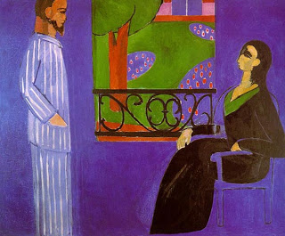

Bava Kamma 89 - Speculative trading in Ketubah

Futures trading is a speculative trade where one
promises to buy some commodity at a later day, paying for it now. A special case of such trade is using one's Ketubah as
the underlying commodity.
A married woman can sell the future value of her Ketubah.
She would stipulae that if at any time she is widowed or divorced, the buyer will collect the entire face value of the Ketubah. However, if she dies during her husband's lifetime, the buyer will receive nothing. Since the buyer makes a significant risk in making such a purchase, the price he pays is steeply discounted from the face value of the Ketubah.
Rabbi Meir finds a problem with this sale. A man is not allowed to live with his wife even for one hour without a Ketubah.
This is because the Ketubah is his promise to insure his wife's future, at least in some degree. Without the Ketubah,
the wife cannot rely on the husband, and their marriage is
as if anulled.
Incidentally, even if the wife injures her husband, he cannot collect the damage from her using the value of the Ketubah. Even if he suggests that she sell her Ketubah in a futures contract as above, this would be tantamount to divorice, which he may not be willing to entertain.
Art: Encounter by Matisse